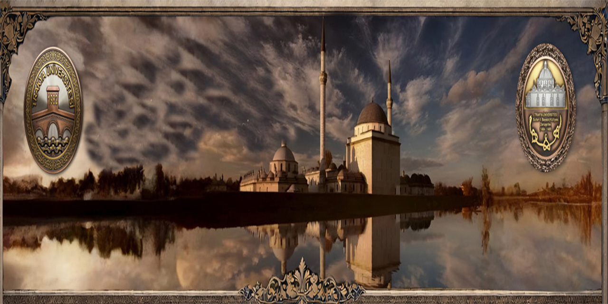

SULTAN II. BAYEZİD KÜLLİYESİ
ANA SAYFA
TARİHÇE
KÜLLİYE
İLETİŞİM

SULTAN II. BAYEZID KÜLLİYESİ
SAĞLIK MÜZESİ - 1488
EVLİYA ÇELEBİ
"Edirne'de Bayezid Darüşşifası'nın pencerelerinden akan suların sesiyle hastalar şifa bulur..."
TARİHÇE
1484-1488 yılları arasında Mimar Hayrettin tarafından inşa edilen bu külliye, dönemin en modern tıp merkezidir.
KÜLLİYE BÖLÜMLERİ
Tıp Medresesi
Darüşşifa (Hastane)
İmarethane
Camii ve Hamam
KÜLLİYE TANITIM VİDEOSU
GÜNCEL HABERLER
Müzik Terapi Konseri
12 Nisan
Restorasyon Duyurusu
2 Mart
Yeni Sergi Salonu Açılışı
18 Şubat
MÜZE HAKKINDA
2004 yılında Avrupa Konseyi Müze Ödülü'nü alan kurumumuz, dünyada su ve müzik ile tedavi yöntemlerini sergileyen nadir müzelerdendir.
ZİYARET SAATLERİ
Hafta İçi: 09:00 - 18:00
Hafta Sonu: 09:00 - 19:00
GİRİŞ ÜCRETLERİ
Tam Bilet: 50 TL
Öğrenci: 25 TL
Müzekart Geçerlidir.
İLETİŞİM
Yeniimaret Mah. Edirne
Tel: 0284 235 10 21